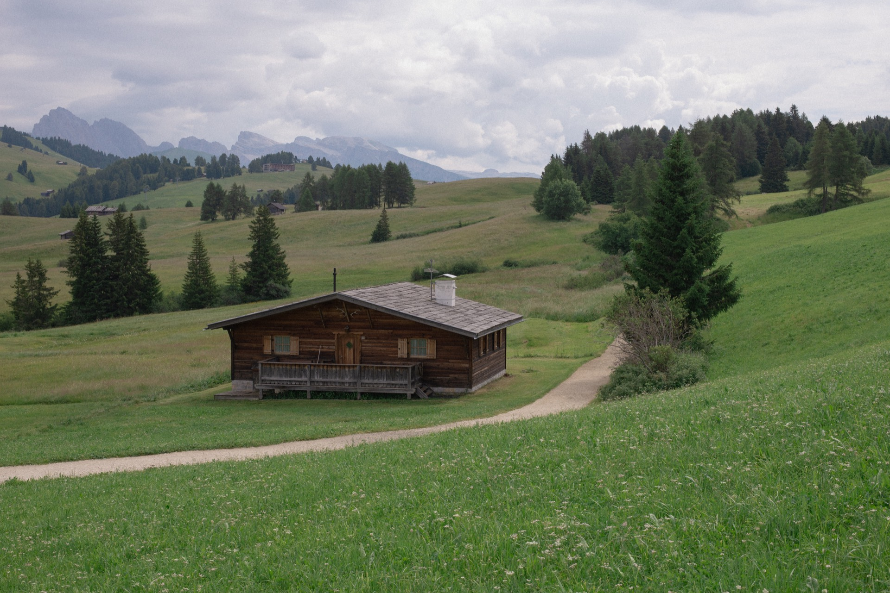
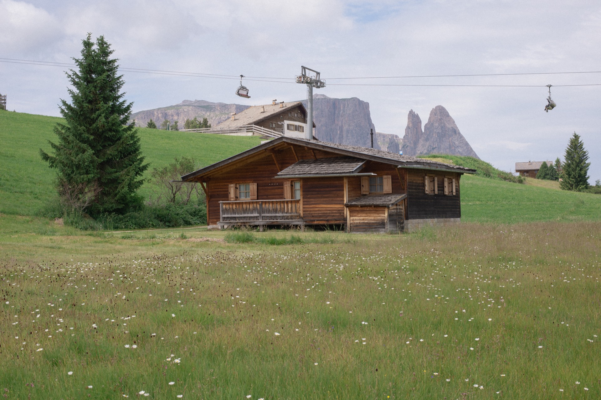
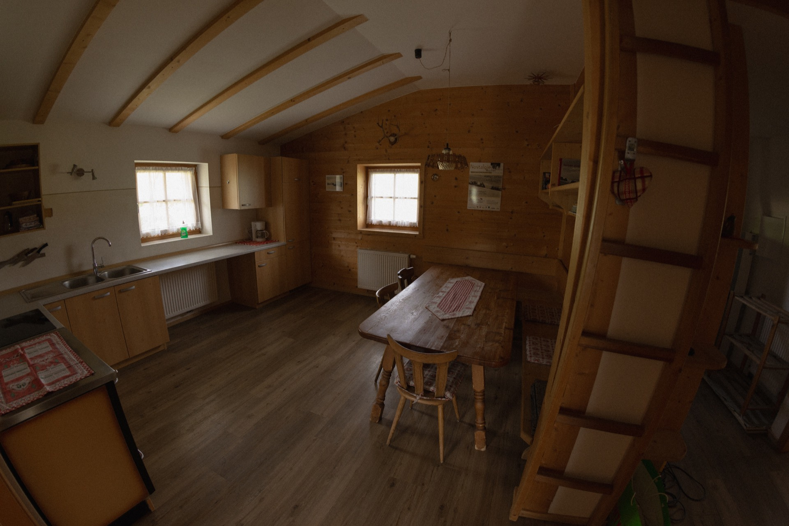
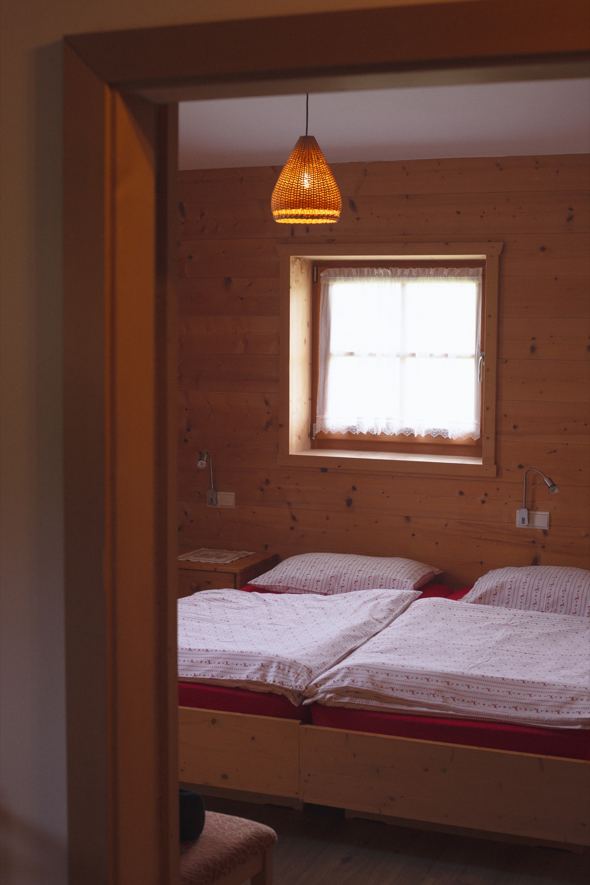
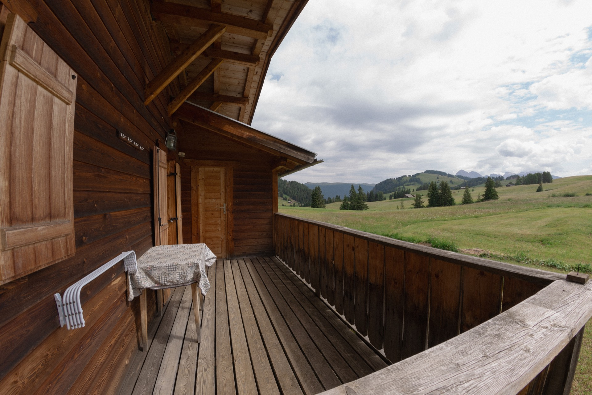
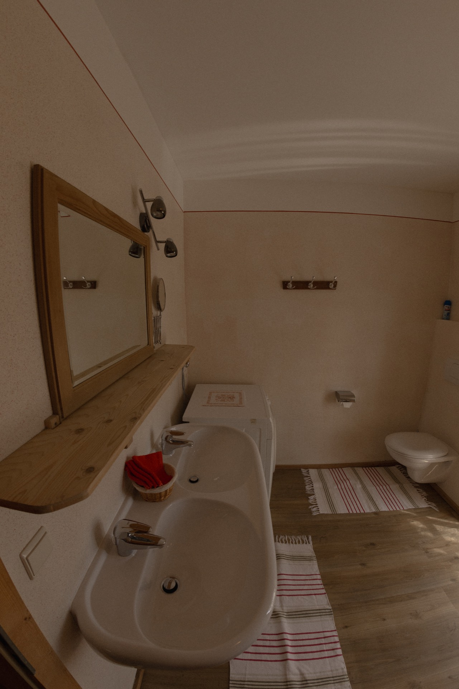
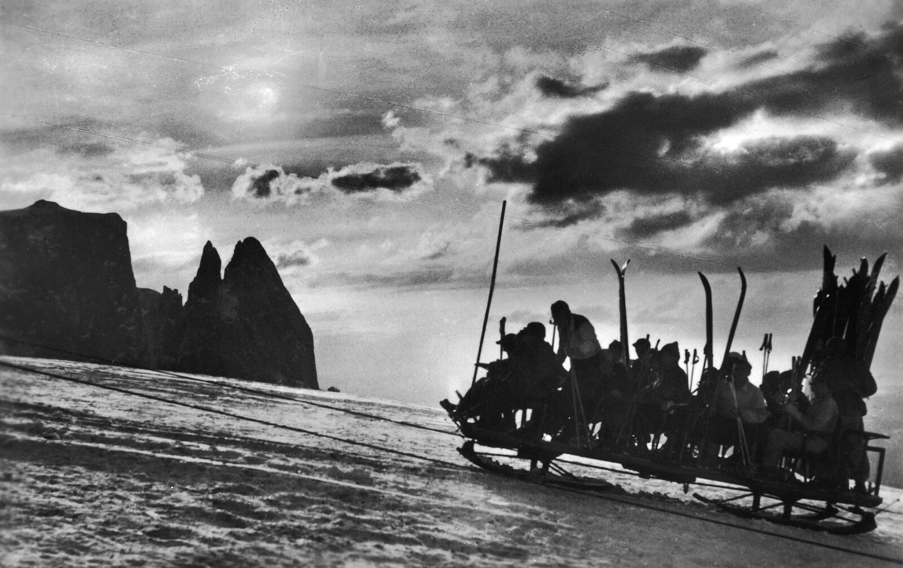
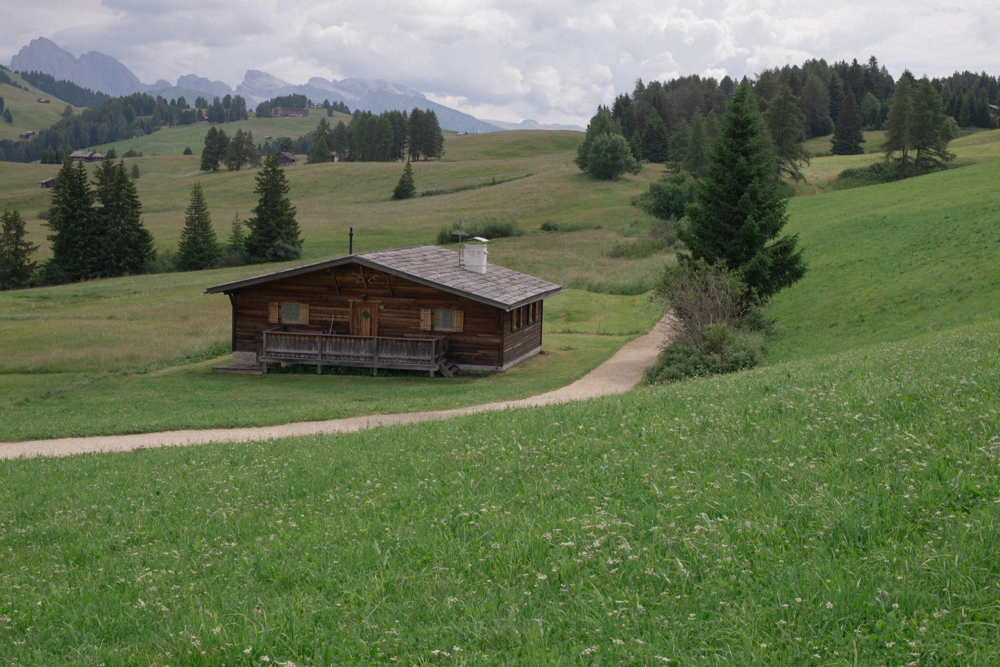

01 / 07

Seiser Alm · Südtirol · Dolomiten
Inmitten der größten Hochalm Europas
Willkommen
„Das Chalet befindet sich inmitten der größten Hochalm Europas, umgeben von imposanten Dolomiten-Gipfeln."
Im Sommer bedecken Blumen die weiten grünen Flächen, im Winter glitzern die Schneekristalle. Unser traditionelles Holzchalet ist ein Rückzugsort für alle, die echte Bergstille suchen.


Stube & Küche
Das Herzstück des Chalets ist die gemütliche Stube, mit viel Holz und einem großen Esstisch lädt sie zum Zusammensitzen, Spielen und Genießen ein. Gleich daneben befindet sich die gut ausgestattete Küche mit Ceran-Kochfeld, geräumigem Kühlschrank und allem, was man für entspannte Ferientage braucht.

Schlafzimmer
Mit viel Holz und alpinem Flair gestaltet, strahlen die Räume eine wohltuende Geborgenheit aus. Der Blick nach draußen erinnert daran, dass die Natur zum Greifen nah ist. Bequeme Betten und liebevolle Details schaffen den idealen Ort für erholsame Nächte auf der Seiser Alm.

Zwei Terrassen
Die zwei Terrassen richten sich nach Osten und nach Westen – so kann man bei Sonnenauf- und Untergang die alpine Umgebung genießen. Entweder Lang und Plattkofel oder Richtung Schlern mit seiner markanten Santner Spitze.

Das Bad
Schlicht und funktional – das Bad bietet alles, was man für eine entspannte Auszeit in den Bergen braucht. Neben Dusche, Waschbecken und WC steht auch eine Waschmaschine zur Verfügung, ideal für längere Aufenthalte oder aktive Tage draußen.
Auf einen Blick
Lang, Plattkofel, Schlern und die Santner Spitze – eingerahmt durch die eigenen Fenster.
Direkt an den Pisten. Skier an der Haustür anschnallen und los.
Skiurlaub im Winter, Blütenwiesen im Sommer. Für 4–7 Personen.
Seit 1938
Das Chalet wurde nicht immer nur zur Übernachtung genutzt, sondern diente seit seiner Erbauung 1938 bis 1970 als Talstation des ersten Skibetriebes „Panorama Lift" auf der Seiseralm. Die Seiser Alm erhielt 1935/36 mit der Bahn von St. Ulrich ihre erste Erschließung – und 1938/39 ging mit der „Slittovia-Joch-Panorama" die erste Liftanlage in Betrieb. Die einstige Talstation dieser Bahn wurde zur gemütlichen Berghütte Chalet Seiser Alm umgebaut, in der Gäste heute übernachten.

Slittovia Joch-Panorama · ca. 1938
Lage & Anreise
Die Lage
Das Chalet befindet sich inmitten des Naturparks Schlern. Es liegt ruhig direkt neben Wanderwegen und Skipisten. Compatsch mit seinen kleinen Geschäften für Lebensmittel oder Zeitungen, Ski- und Radverleih ist fußläufig in 10 Minuten erreichbar. Dort befinden sich auch ein Café und ein paar Restaurants sowie die öffentlichen Verkehrsmittel mit Bus und Seilbahn.
Fahrgenehmigung
Das Chalet liegt auf der verkehrsberuhigten Seiser Alm, welche täglich von 09:00–17:00 Uhr für den Individualverkehr gesperrt ist. Vor Reiseantritt senden wir Ihnen die Fahrgenehmigung für die Anfahrt mit Ihrem Auto ins Chalet zu. Damit sind Sie berechtigt während Ihres Aufenthaltes vor 10:00 Uhr und nach 17:00 Uhr den angegebenen Straßenabschnitt zu befahren, zeitlich uneingeschränkt an- und abzureisen (das Chalet steht Ihnen am Anreisetag ab 12:00 Uhr und am Abreisetag bis 10:00 Uhr zur Verfügung) sowie während Ihres Aufenthalts direkt neben dem Chalet zu parken.
Winter
Für eine sichere Anreise im Winter empfehlen wir Winterbereifung und Schneeketten (oder Winterreifen mit Allradantrieb). Im Winter ist das Chalet leider nicht direkt mit dem Auto zu erreichen. Sie können dann bequem am Parkplatz unter dem Restaurant Panoramalift parken. Für den Gepäcktransport steht Ihnen ein nicht motorbetriebener Schlitten zur Verfügung.
Mit dem Auto
Von Norden: Ausfahrt „Klausen", über Waidbruck und Kastelruth auf die Seiser Alm.
Von Süden: Ausfahrt „Bozen Nord", über Blumau, Völs und Seis auf die Seiser Alm.
Das Chalet liegt direkt hinter Compatsch.

Die Region
Die Seiser Alm – Europas größtes Hochplateau – erstreckt sich auf 56 km² in 1.680–2.350 m Höhe vor der spektakulären Kulisse der Dolomiten (UNESCO-Welterbe). Seit über 1.000 Jahren dient die Alm als Viehweide; um 1900 öffneten Bauern ihre Hütten für Gäste.
Kontakt
Schreiben Sie uns – wir melden uns innerhalb von 24 Stunden mit Verfügbarkeit und einem persönlichen Angebot.
Adresse
Seiser Alm, Südtirol, IT
Ihre Anfrage ist bei uns eingegangen. Wir melden uns innerhalb von 24 Stunden mit Verfügbarkeit und einem persönlichen Angebot.
Design-Varianten